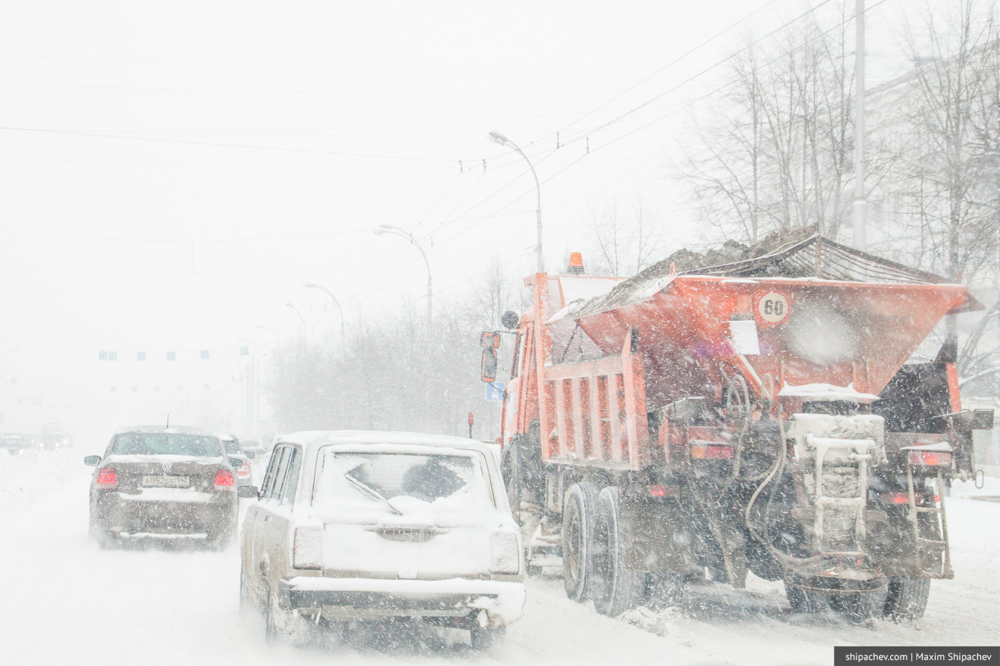

Меня многие спрашивают, что можно сделать для города в эту годину. Чем помочь городу. Объясняю на своих трёх пальцах.
1. Видишь буксует машина — толкай. Если ты водитель, запаркуйся рядом и толкай. Если ты пешеход, — тем более. Выехать самостоятельно в одиночку без лопаты из глубокого снега на переднеприводном автомобиле достаточно сложно. На заднеприводном — почти невозможно. Два-три прохожих достаточно, чтобы за минуту вытолкать почти любую легковушку. Потом напишешь в Одноклассниках, что водители мудаки, а пока просто помоги.

2. Если ты водитель и во дворе впереди тебя идёт пешеход, замедлись на расстоянии метров 15 от него. Езжай медленно, пока пешеход не дойдёт до подъезда или поворота дороги. Не подпирай его, не загоняй его в сугроб. Даже, если это пенсионер, чья крейсерская скорость 3 км/ч. Тем более, если это пенсионер. Клаксон свой засунь сам знаешь куда.
3. Возьми в ЖЭКе лопату, расчисть хотя бы 4 квадратных метра перед домом. Здоровья от тебя не убудет, а скорее и наоборот. Можно даже в Фейсбук это выложить. Люди такое одобряют.